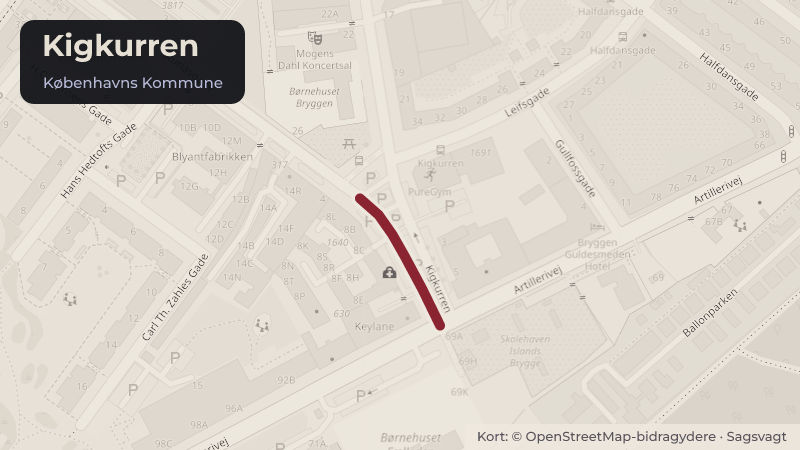

Besluttet 24. november, Amager Vest Lokaludvalg
Leje af hestedrochegrunden, Kigkurren til grønt fællesskabs projekt

Kort fortalt
- Hvem
- Amager Vest Lokaludvalg
- Hvornår
- Tirsdag 24. november 2026
- Status
- Besluttet. Indstillingen blev godkendt.Beslutningen er forkortet her. Læs hele beslutningen
Er noget forkert her? Skriv til os
Læs hele sagen Kommunens egen tekst
Indstilling
Forpersonen for Amager Vest Lokaludvalg indstiller, at lokaludvalget bevilger 40.000 kr. til leje af hestedrochearealet , Kigkurren i 2027 på baggrund af indstilling fra Jan Oster.
Problemstilling
Lokaludvalgets bydelsplanprojekt fællesskab Kigkurren har siden 2020, hvor hestedrochegrunden på Kigkurren var et forsømt og ubenyttet areal, udviklet sig til et levende, åbent og grønt fællesskab på Islands Brygge.
Lokaludvalget fik i 2020 lovning på at bruge arealet til netværksskabende aktiviteter i en periode på 3 år af Københavns Ejendomme. Da arealet fortsat er ubenyttet af Københavns Kommune, har lokaludvalget fået mulighed for at bruge arealet til og med 2029 til fællesskabsdannende aktiviteter drevet af lokale frivillige.
Projektets overordnede formål er, at tydeliggøre interessen og potentialerne i en begrønning af hele Kigkurren.
Beretning fra året på Hestedrochen, Kigkurren 2026
Hestedrochegrunden, Kigkurren er en grøn oase, som er godt besøgt. Det gælder både af de der har plantekasser, af lokale beboere, af de ældre som bor lige overfor. Mange børnefamilier kigger forbi på deres vej hjem fra institutionerne. De får lidt snak med hinanden, mens børnene leger. Faste gæster er også medarbejdere fra de omkringliggende arbejdspladser, som nyder deres frokost i det grønne. Når vejret er til det, er der altid folk. Man kan roligt sige, at stedet er til glæde for almenvældet.
Desuden har vi faste arrangementer. Det er både fælles arbejdsdage og arrangementer som f.eks. tøndeslagning til fastelavn, indvielse af foråret, halloween med produktion af græskarlygter og vi samles og ønsker hinanden glædelig jul. Arrangementerne er åbne for alle på Islands Brygge og betales af deltagerne selv. Stedet medvirker til både glæde og fællesskab.
Hensigten er fortsat at styrke biodiversitet og plante økologisk. Vi ser, at flere insekter holder til og interessen for stedet er tilstede, da der er venteliste til plantekasserne.
Bryggens Børnehus er en god nabo til fællesskabet. Vi udveksler erfaringer om, hvad der sker i området og de hjælper os med vandforsyning, som vi desværre mangler. Det er problematisk, at vi ikke selv har vand, da det ikke kun handler om vand til planter, men også til vedligehold og rengøring.
Hver år sker en udvikling og nytænkning. Det vil også ske i det kommende år, samtidig er der er ting, som det er nødvendigt at holde vedlige og som skal udskiftes f.eks. redskaber, plantekrukker, planter, maling m.m.
Budgetbehov 2027
Leje af grund 33.000 kr. pr. år. + uforudsete udgifter 7.000 kr.
I alt 40.000 kr.
Løsning
At lokaludvalget bevilger 40.000 kr. til leje af hestedrochearealet , Kigkurren i 2027 på baggrund af indstilling fra Jan Oster.
Økonomi
Indstillingen indebærer at bydelspuljen belastes med 40.000 kr. i 2027.
Beslutning
Indstillingen blev godkendt.
Chris Hvid kunne ikke bakke op om indstillingen.
Kilde: Københavns Kommune, Amager Vest Lokaludvalg, referat fra mødet tirsdag 24. november 2026, punkt 5. Læs den originale sag hos kommunen.
Steder i sagen: Kigkurren